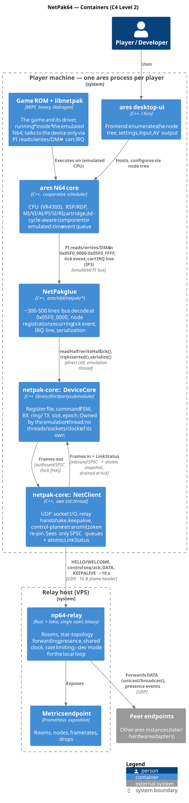
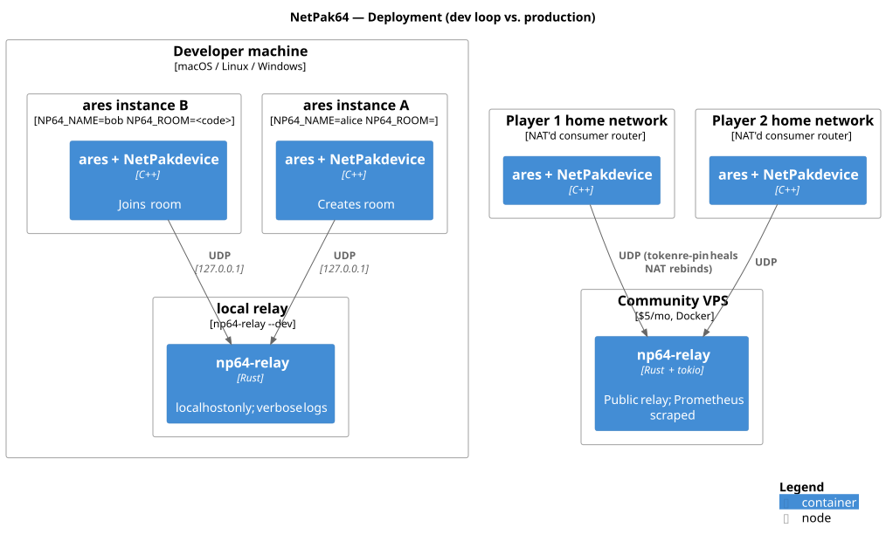

02 — Containers & Deployment (C4 Level 2)
Container View (C4 L2)

Figure: Runtime containers — what runs where and how they communicate
Reading the container view
A "container" here (C4 sense: independently runnable/deployable unit) is unusual in this project because one of the containers is a MIPS binary running inside an emulated console inside another container. The stack, from the inside out:
game code ──calls──► libnetpak ──PI loads/stores/DMA──► [emulated bus boundary] ──► NetPak glue (ares) ──direct call──► DeviceCore (netpak-core) ──SPSC queues──► NetClient thread ──UDP──► np64-relay ──UDP──► peers
The emulated bus boundary is the load-bearing interface: everything to its left is spec-portable ROM code that would run unmodified on real hardware; everything to its right is host-side implementation detail.
Containers within one player's machine
| Container | Tech | Responsibility | Key interface |
|---|---|---|---|
| ares desktop-ui | C++ / hiro | Frontend: enumerates the node tree, settings, input, AV output | ares Node tree |
| ares N64 core | C++ cooperative scheduler | Cycle-aware console model | PI decode, event queue, IP3 line |
| Game ROM + libnetpak | MIPS/libdragon | Game + driver, inside the emulated N64; talks to the device only via PI reads/writes/DMA + cart IRQ | Device registers at 0x05F0_0000 (spec) |
| NetPak glue | C++ (ares/n64/netpak/*) |
~300-500 lines: bus decode at 0x05F0_0000, node registration, recurring tick event, IRQ line, serialization | ― |
netpak-core DeviceCore |
C++ library (thirdparty submodule) | Register file, command FSM, RX ring / TX slot, epoch. Owned by the emulation thread; no threads/sockets/clocks of its own | readHalf/writeHalf/tick/serialize |
netpak-core NetClient |
C++, own std::thread |
UDP socket I/O, relay handshake, keepalive, control-plane retransmit, token re-pin. Sees only SPSC queues + atomic LinkStatus |
Two SPSC queues + atomic snapshot |
The one threading rule (integration doc §6, restated because every container above obeys it): all architecturally visible device state is owned by the emulation thread. The net thread's entire world is two single-producer/single-consumer queues and one atomic. There is no lock on the emulation thread's path; savestates are race-free by construction; loopback runs are deterministic.
The relay host
np64-relay is a single static Rust binary (tokio runtime — chosen for no-GC latency jitter and trivial Docker deploys) with a Prometheus metrics endpoint. One UDP socket per client connection; two logical planes over it (reliable control, fire-and-forget data).
Deployment Views

Figure: Dev loop (one machine, 2 ares + local relay) vs. production (VPS relay, NAT'd clients)
Dev loop (the configuration that must never regress)
Two ares instances + np64-relay --dev on one machine, all configured by env vars (NP64_RELAY, NP64_ROOM, NP64_NAME, NP64_LOG — precedence: env > netpak.bml beside the ROM > defaults).
A degenerate form uses NP64_RELAY=loopback: the built-in echo backend, no sockets at all, fully deterministic — this is the CI configuration.
Production deployment
Relay on a public VPS; players behind consumer NAT. The protocol is designed for this topology:
- Keepalives every ~10 s hold NAT bindings
- The token re-pins a client's source address transparently mid-session (no reconnect needed)
- The ~1200 B frame cap dodges path-MTU fragmentation
Capacity math: Worst case per saturated room = 8 nodes × 30 Hz × 256 B × 7-peer fanout ≈ 0.4 MB/s. Realistic homebrew rooms (2–4 players, 10–30 Hz) are an order of magnitude below that. One small VPS hosts a community.
Cross-container data formats
Three formats cross container boundaries; keeping them distinct avoids confusion:
- Device register/buffer layout (spec §5.2) — crosses the emulated bus. Big-endian 32-bit registers as two AD16 halves; 1024 B payload MTU.
Frame(netpak-core internal) — crosses the SPSC queues betweenDeviceCoreandNetClient. In-memory struct, host-endian; not wire format.- Wire frame (spec §8) — crosses UDP. 16 B header
{ver, type, flags, channel, token u32, seq u16, ack u16, src u8, dst u8, len u16}+ payload; explicit serialization, nevermemcpyof a struct.
What is deliberately not a container
- No PC-side bridge app — the defining difference from N64-NetLib; the emulator is the endpoint.
- No game server — the relay forwards; game logic stays in the ROMs.
- No TCP anywhere in the hot path — reliability where needed is seq/ack over UDP, layered as the GameNetworkingSockets-style pattern.